library(mlr3verse)
library(GEOquery)
library(mlr3learners) # for knn
library(ranger) # for randomforest
set.seed(789)22 Examples
22.1 Overview
In this chapter, we focus on practical aspects of machine learning. The goal is to provide a hands-on introduction to the application of machine learning techniques to real-world data. While the theoretical foundations of machine learning are important, the ability to apply these techniques to solve practical problems is equally crucial. In this chapter, we will use the mlr3 package in R to build and evaluate machine learning models for classification and regression tasks.
We will use three examples to illustrate the machine learning workflow:
- Cancer types classification: We will classify different types of cancer based on gene expression data.
- Age prediction from DNA methylation: We will predict the chronological age of individuals based on DNA methylation patterns.
- Gene expression prediction: We will predict gene expression levels based on histone modification data.
We’ll be applying knn, decision trees, and random forests, linear regression, and penalized regression models to these datasets.
The mlr3 R package is a modern, object-oriented machine learning framework in R that builds on the success of its predecessor, the mlr package. It provides a flexible and extensible platform for handling common machine learning tasks such as data preprocessing, model training, hyperparameter tuning, and model evaluation Figure 22.1. The package is designed to guide and standardize the process of using complex machine learning pipelines.
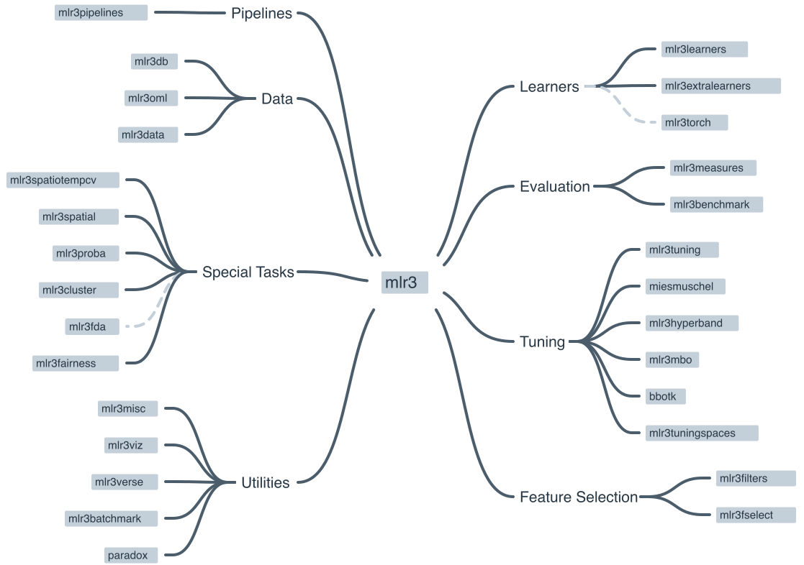
22.1.1 Key features of mlr3
- Task abstraction
- mlr3 encapsulates different types of learning problems like classification, regression, and survival analysis into “Task” objects, making it easier to handle various learning scenarios. Examples of tasks include classification tasks, regression tasks, and survival tasks.
- Modular design
- The package follows a modular design, allowing users to quickly swap out different components such as learners (algorithms), measures (performance metrics), and resampling strategies. Examples of learners include linear regression, logistic regression, and random forests. Examples of measures include accuracy, precision, recall, and F1 score. Examples of resampling strategies include cross-validation, bootstrapping, and holdout validation.
- Extensibility
- Users can extend the functionality of mlr3 by adding custom components like learners, measures, and preprocessing steps via the R6 object-oriented system.
- Preprocessing
- mlr3 provides a flexible way to preprocess data using “PipeOps” (pipeline operations), allowing users to create reusable preprocessing pipelines.
- Tuning and model selection
- mlr3 supports hyperparameter tuning and model selection using various search strategies like grid search, random search, and Bayesian optimization.
- Parallelization
- The package allows for parallelization of model training and evaluation, making it suitable for large-scale machine learning tasks.
- Benchmarking
- mlr3 facilitates benchmarking of multiple algorithms on multiple tasks, simplifying the process of comparing and selecting the best models.
You can find more information, including tutorials and examples, on the official mlr3 GitHub repository1 and the mlr3 book2.
22.2 The mlr3 workflow
The mlr3 package is designed to simplify the process of creating and deploying complex machine learning pipelines. The package follows a modular design, which means that users can quickly swap out different components such as learners (algorithms), measures (performance metrics), and resampling strategies. The package also supports parallelization of model training and evaluation, making it suitable for large-scale machine learning tasks.
graph TD A[Load data] B[Create a task\nregression, classification, etc.] B --> learner[Choose learner] A --> C[Split data] C --> trainset(Training set) C --> testset[Test set] trainset --> train[Train model] learner --> train testset --> testing[Test model] train --> testing testing --> eval[Evaluate &\nInterpret]
The following sections describe each of these steps in detail.
22.2.1 The machine learning Task
Imagine you want to teach a computer how to make predictions or decisions, similar to how you might teach a student. To do this, you need to clearly define what you want the computer to learn and work on. This is called defining a “task.” Let’s break down what this involves and why it’s important.
22.2.1.1 Step 1: Understand the Problem
First, think about what problem you want to solve or what question you want the computer to answer. For example: - Do you want to predict the weather for tomorrow? - Are you trying to figure out if an email is spam or not? - Do you want to know how much a house might sell for?
These questions define your task type. In machine learning, there are several common task types:
- Classification: Deciding which category something belongs to (e.g., spam or not spam).
- Regression: Predicting a number (e.g., the price of a house).
- Clustering: Grouping similar items together (e.g., customer segmentation).
22.2.1.2 Step 2: Choose Your Data
Next, you need data that is related to your problem. Think of data as the information or examples you’ll use to teach the computer. For instance, if your task is to predict house prices, your data might include:
- The size of the house
- The number of bedrooms
- The location of the house
- The age of the house
These pieces of information are called features. Features are the input that the computer uses to make predictions.
22.2.1.3 Step 3: Define the Target
Along with features, you need to define the target. The target is what you want to predict or decide. In the house price example, the target would be the actual price of the house.
22.2.1.4 Step 4: Create the Task
Now that you have your problem, data, and target, you can create the task. In mlr3, a task brings together the type of problem (task type), the features (input data), and the target (what you want to predict).
Here’s a simple summary:
- Task Type: What kind of problem are you solving? (e.g., classification, regression)
- Features: What information do you have to make the prediction? (e.g., size, location)
- Target: What are you trying to predict? (e.g., house price)
By clearly defining these elements, you set a solid foundation for the machine learning process. This helps ensure that the computer can learn effectively and make accurate predictions.
22.2.1.5 mlr3 and Tasks
The mlr3 package uses the concept of “Tasks” to encapsulate different types of learning problems like classification, regression, and survival analysis. A Task contains the data (features and target variable) and additional metadata to define the machine learning problem. For example, in a classification task, the target variable is a label (stored as a character or factor), while in a regression task, the target variable is a numeric quantity (stored as an integer or numeric).
There are a number of Task Types that are supported by mlr3. To create a task from a data.frame(), data.table() or Matrix(), you first need to select the right task type:
Classification Task: The target is a label (stored as
characterorfactor) with only relatively few distinct values →TaskClassif.Regression Task: The target is a numeric quantity (stored as
integerornumeric) →TaskRegr.Survival Task: The target is the (right-censored) time to an event. More censoring types are currently in development →
mlr3proba::TaskSurvin add-on package mlr3proba.Density Task: An unsupervised task to estimate the density →
mlr3proba::TaskDensin add-on package mlr3proba.Cluster Task: An unsupervised task type; there is no target and the aim is to identify similar groups within the feature space →
mlr3cluster::TaskClustin add-on package mlr3cluster.Spatial Task: Observations in the task have spatio-temporal information (e.g. coordinates) →
mlr3spatiotempcv::TaskRegrSTormlr3spatiotempcv::TaskClassifSTin add-on package mlr3spatiotempcv.Ordinal Regression Task: The target is ordinal →
TaskOrdinalin add-on package mlr3ordinal (still in development).
22.2.2 The “Learner” in Machine Learning
After you’ve defined your task, the next step in teaching a computer to make predictions or decisions is to choose a “learner.” Let’s explore what a learner is and how it fits into the mlr3 package.
22.2.2.1 What is a “Learner”?
Think of a learner as the method or tool that the computer uses to learn from the data. Another common name for a “learner” is a “model.” It’s similar to choosing a tutor or a teacher for a student. Different learners have different ways of understanding and processing information. For example:
- Some learners might be great at recognizing patterns in data, like a tutor who is excellent at spotting trends.
- Others might be good at making decisions based on rules, like a tutor who uses step-by-step logic.
In machine learning, there are many types of learners, each with its own strengths and weaknesses. Here are a few examples:
- Decision Trees: These learners make decisions by asking a series of questions, like “Is the house larger than 1000 square feet?” and “Does it have more than 3 bedrooms?”
- k-Nearest Neighbors: These learners make predictions based on the similarity of new data points to existing data points.
- Linear Regression: This learner tries to fit a straight line through the data points to make predictions about numbers.
- Random Forests: These are like a group of decision trees working together to make more accurate predictions.
- Support Vector Machines: These learners find the best boundary that separates different categories in the data.
22.2.2.2 Choosing the Right Learner
Selecting the right learner is crucial because different learners work better for different types of tasks and data. For example:
- If your task is to classify emails as spam or not spam, a decision tree or a support vector machine might work well.
- If you’re predicting house prices, linear regression or random forests could be good choices.
The goal is to find a learner that can understand the patterns in your data and make accurate predictions. This is where the mlr3 package comes in handy. It provides a wide range of learners that you can choose from, making it easier to experiment and find the best learner for your task.
22.2.2.3 Learners in mlr3
In the mlr3 package, learners are pre-built tools that you can easily use for your tasks. Here’s how it works:
- Select a Learner: mlr3 provides a variety of learners to choose from, like decision trees, linear regression, and more.
- Train the Learner: Once you’ve selected a learner, you provide it with your task (the problem, data, and target). The learner uses this information to learn and make predictions.
- Evaluate and Improve: After training, you can test how well the learner performs and make adjustments if needed, such as trying a different learner or fine-tuning the current one.
22.2.2.4 mlr3 and Learners
Objects of class Learner provide a unified interface to many popular machine learning algorithms in R. They consist of methods to train and predict a model for a Task and provide meta-information about the learners, such as the hyperparameters (which control the behavior of the learner) you can set.
The base class of each learner is Learner, specialized for regression as LearnerRegr and for classification as LearnerClassif. Other types of learners, provided by extension packages, also inherit from the Learner base class, e.g. mlr3proba::LearnerSurv or mlr3cluster::LearnerClust.
All Learners work in a two-stage procedure:
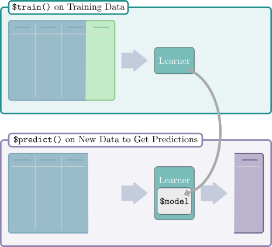
- Training stage: The training data (features and target) is passed to the Learner’s
$train()function which trains and stores a model, i.e. the relationship of the target and features. - Predict stage: The new data, usually a different slice of the original data than used for training, is passed to the
$predict()method of the Learner. The model trained in the first step is used to predict the missing target, e.g. labels for classification problems or the numerical value for regression problems.
There are a number of predefined learners. The mlr3 package ships with the following set of classification and regression learners. We deliberately keep this small to avoid unnecessary dependencies:
classif.featureless: Simple baseline classification learner. The default is to always predict the label that is most frequent in the training set. While this is not very useful by itself, it can be used as a “fallback learner” to make predictions in case another, more sophisticated, learner failed for some reason.regr.featureless: Simple baseline regression learner. The default is to always predict the mean of the target in training set. Similar tomlr_learners_classif.featureless, it makes for a good “fallback learner”classif.rpart: Single classification tree from package rpart.regr.rpart: Single regression tree from package rpart.
This set of baseline learners is usually insufficient for a real data analysis. Thus, we have cherry-picked implementations of the most popular machine learning method and collected them in the mlr3learners package:
- Linear (
regr.lm) and logistic (classif.log_reg) regression - Penalized Generalized Linear Models (
regr.glmnet,classif.glmnet), possibly with built-in optimization of the penalization parameter (regr.cv_glmnet,classif.cv_glmnet) - (Kernelized) k-Nearest Neighbors regression (
regr.kknn) and classification (classif.kknn). - Kriging / Gaussian Process Regression (
regr.km) - Linear (
classif.lda) and Quadratic (classif.qda) Discriminant Analysis - Naive Bayes Classification (
classif.naive_bayes) - Support-Vector machines (
regr.svm,classif.svm) - Gradient Boosting (
regr.xgboost,classif.xgboost) - Random Forests for regression and classification (
regr.ranger,classif.ranger)
More machine learning methods and alternative implementations are collected in the mlr3extralearners repository.
22.3 Setup
22.4 Example: Cancer types
In this exercise, we will be classifying cancer types based on gene expression data. The data we are going to access are from Brouwer-Visser et al. (2018).
The data are from the Gene Expression Omnibus (GEO) database, a public repository of functional genomics data. The data are from a study that aimed to identify gene expression signatures that can distinguish between different types of cancer. The data include gene expression profiles from patients with different types of cancer. The goal is to build a machine learning model that can predict the cancer type based on the gene expression data.
22.4.1 Understanding the Problem
Before we start building a machine learning model, it’s important to understand the problem we are trying to solve. Here are some key questions to consider:
- What are the features?
- What is the target variable?
- What type of machine learning task is this (classification, regression, clustering)?
- What is the goal of the analysis?
22.4.2 Data Preparation
Use the [GEOquery] package to fetch data about [GSE103512].
library(GEOquery)
gse = getGEO("GSE103512")[[1]]The first step, a detail, is to convert from the older Bioconductor data structure (GEOquery was written in 2007), the ExpressionSet, to the newer SummarizedExperiment.
library(SummarizedExperiment)
se = as(gse, "SummarizedExperiment")Examine two variables of interest, cancer type and tumor/normal status.
with(colData(se),table(`cancer.type.ch1`,`normal.ch1`)) normal.ch1
cancer.type.ch1 no yes
BC 65 10
CRC 57 12
NSCLC 60 9
PCA 60 7Before embarking on a machine learning analysis, we need to make sure that we understand the data. Things like missing values, outliers, and other problems can cause problems for machine learning algorithms.
In R, plotting, summaries, and other exploratory data analysis tools are available. PCA analysis, clustering, and other methods can also be used to understand the data. It is worth spending time on this step, as it can save time later.
22.4.3 Feature selection and data cleaning
While we could use all genes in the analysis, we will select the most informative genes using the variance of gene expression across samples. Other methods for feature selection are available, including those based on correlation with the outcome variable.
ImportantFeature selection
Feature selection should be done on the training data only, not the test data to avoid overfitting. The test data should be used only for evaluation. In other words, the test data should be “unseen” by the model until the final evaluation.
Remember that the apply function applies a function to each row or column of a matrix. Here, we apply the sd function to each row of the expression matrix to get a vector of stan
sds = apply(assay(se, 'exprs'),1,sd)
## filter out normal tissues
se_small = se[order(sds,decreasing = TRUE)[1:200],
colData(se)$characteristics_ch1.1=='normal: no']
# remove genes with no gene symbol
se_small = se_small[rowData(se_small)$Gene.Symbol!='',]To make the data easier to work with, we will use the opportunity to use one of the rowData columns as the rownames of the data frame. The make.names function is used to make sure that the rownames are valid R variable names and unique.
## convert to matrix for later use
dat = assay(se_small, 'exprs')
rownames(dat) = make.names(rowData(se_small)$Gene.Symbol)We also need to transpose the data so that the rows are the samples and the columns are the features in order to use the data with mlr3.
feat_dat = t(dat)
tumor = data.frame(tumor_type = colData(se_small)$cancer.type.ch1, feat_dat)This is another good time to check the data. Make sure that the data is in the format that you expect. Check the dimensions, the column names, and the data types.
22.4.4 Creating the “task”
The first step in using mlr3 is to create a task. A task is a data set with a target variable. In this case, the target variable is the cancer type. The mlr3 package provides a function to convert a data frame into a task. These tasks can be used with any machine learning algorithm in mlr3.
This is a classification task, so we will use the as_task_classif function to create the task. The classification task requires a target variable that is categorical.
library(mlr3)
tumor$tumor_type = as.factor(tumor$tumor_type)
task = as_task_classif(tumor,target='tumor_type')22.4.5 Splitting the data
Here, we randomly divide the data into 2/3 training data and 1/3 test data. This is a common split, but other splits can be used. The training data is used to train the model, and the test data is used to evaluate the trained model.
set.seed(7)
train_set = sample(task$row_ids, 0.67 * task$nrow)
test_set = setdiff(task$row_ids, train_set)
Important
Training and testing on the same data is a common mistake. We want to test the model on data that it has not seen before. This is the only way to know if the model is overfitting and to get an accurate estimate of the model’s performance.
In the next sections, we will train and evaluate three different models on the data: k-nearest-neighbor, classification tree, and random forest. Remember that the goal is to predict the cancer type based on the gene expression data. The mlr3 package uses the concept of “learners” to encapsulate different machine learning algorithms.
22.4.6 Example learners
22.4.6.1 K-nearest-neighbor
The first model we will use is the k-nearest-neighbor model. This model is based on the idea that similar samples have similar outcomes. The number of neighbors to use is a parameter that can be tuned. We’ll use the default value of 7, but you can try other values to see how they affect the results. In fact, mlr3 provides the ability to tune parameters automatically, but we won’t cover that here.
22.4.6.1.1 Create the learner
In mlr3, the machine learning algorithms are called learners. To create a learner, we use the lrn function. The lrn function takes the name of the learner as an argument. The lrn function also takes other arguments that are specific to the learner. In this case, we will use the default values for the arguments.
library(mlr3learners)
learner = lrn("classif.kknn")You can get a list of all the learners available in mlr3 by using the lrn() function without any arguments.
lrn()<DictionaryLearner> with 51 stored values
Keys: classif.cv_glmnet, classif.debug, classif.featureless,
classif.glmnet, classif.kknn, classif.lda, classif.log_reg,
classif.multinom, classif.naive_bayes, classif.nnet, classif.qda,
classif.ranger, classif.rpart, classif.svm, classif.xgboost,
clust.agnes, clust.ap, clust.bico, clust.birch, clust.cmeans,
clust.cobweb, clust.dbscan, clust.dbscan_fpc, clust.diana, clust.em,
clust.fanny, clust.featureless, clust.ff, clust.hclust,
clust.hdbscan, clust.kkmeans, clust.kmeans, clust.MBatchKMeans,
clust.mclust, clust.meanshift, clust.optics, clust.pam,
clust.SimpleKMeans, clust.xmeans, regr.cv_glmnet, regr.debug,
regr.featureless, regr.glmnet, regr.kknn, regr.km, regr.lm,
regr.nnet, regr.ranger, regr.rpart, regr.svm, regr.xgboost22.4.6.1.2 Train
To train the model, we use the train function. The train function takes the task and the row ids of the training data as arguments.
learner$train(task, row_ids = train_set)Here, we can look at the trained model:
# output is large, so do this on your own
learner$model22.4.6.1.3 Predict
Lets use our trained model works to predict the classes of the training data. Of course, we already know the classes of the training data, but this is a good way to check that the model is working as expected. It also gives us a measure of performance on the training data that we can compare to the test data to look for overfitting.
pred_train = learner$predict(task, row_ids=train_set)And check on the test data:
pred_test = learner$predict(task, row_ids=test_set)22.4.6.1.4 Assess
In this section, we can look at the accuracy and performance of our model on the training data and the test data. We can also look at the confusion matrix to see which classes are being confused with each other.
pred_train$confusion truth
response BC CRC NSCLC PCA
BC 42 0 0 0
CRC 0 40 0 0
NSCLC 1 0 44 0
PCA 0 0 0 35This is a multi-class confusion matrix. The rows are the true classes and the columns are the predicted classes. The diagonal shows the number of samples that were correctly classified. The off-diagonal elements show the number of samples that were misclassified.
We can also look at the accuracy of the model on the training data and the test data. The accuracy is the number of correctly classified samples divided by the total number of samples.
measures = msrs(c('classif.acc'))
pred_train$score(measures)classif.acc
0.9938272 pred_test$confusion truth
response BC CRC NSCLC PCA
BC 22 0 0 0
CRC 0 17 1 0
NSCLC 0 0 15 0
PCA 0 0 0 25pred_test$score(measures)classif.acc
0.9875 Compare the accuracy on the training data to the accuracy on the test data. Do you see any evidence of overfitting?
22.4.6.2 Classification tree
We are going to use a classification tree to classify the data. A classification tree is a series of yes/no questions that are used to classify the data. The questions are based on the features in the data. The classification tree is built by finding the feature that best separates the data into the different classes. Then, the data is split based on the value of that feature. The process is repeated until the data is completely separated into the different classes.
22.4.6.2.1 Train
# in this case, we want to keep the model
# so we can look at it later
learner = lrn("classif.rpart", keep_model = TRUE)learner$train(task, row_ids = train_set)We can take a look at the model.
learner$modeln= 162
node), split, n, loss, yval, (yprob)
* denotes terminal node
1) root 162 118 NSCLC (0.26543210 0.24691358 0.27160494 0.21604938)
2) CDHR5>=5.101625 40 0 CRC (0.00000000 1.00000000 0.00000000 0.00000000) *
3) CDHR5< 5.101625 122 78 NSCLC (0.35245902 0.00000000 0.36065574 0.28688525)
6) ACPP< 6.088431 87 43 NSCLC (0.49425287 0.00000000 0.50574713 0.00000000)
12) GATA3>=4.697803 41 1 BC (0.97560976 0.00000000 0.02439024 0.00000000) *
13) GATA3< 4.697803 46 3 NSCLC (0.06521739 0.00000000 0.93478261 0.00000000) *
7) ACPP>=6.088431 35 0 PCA (0.00000000 0.00000000 0.00000000 1.00000000) *Decision trees are easy to visualize if they are small. Here, we can see that the tree is very simple, with only two splits.
library(mlr3viz)
library(ggparty)Loading required package: ggplot2Loading required package: partykitLoading required package: gridLoading required package: libcoinLoading required package: mvtnorm
Attaching package: 'partykit'The following object is masked from 'package:SummarizedExperiment':
widthThe following object is masked from 'package:GenomicRanges':
widthThe following object is masked from 'package:IRanges':
widthThe following object is masked from 'package:S4Vectors':
widthThe following object is masked from 'package:BiocGenerics':
widthautoplot(learner, type='ggparty')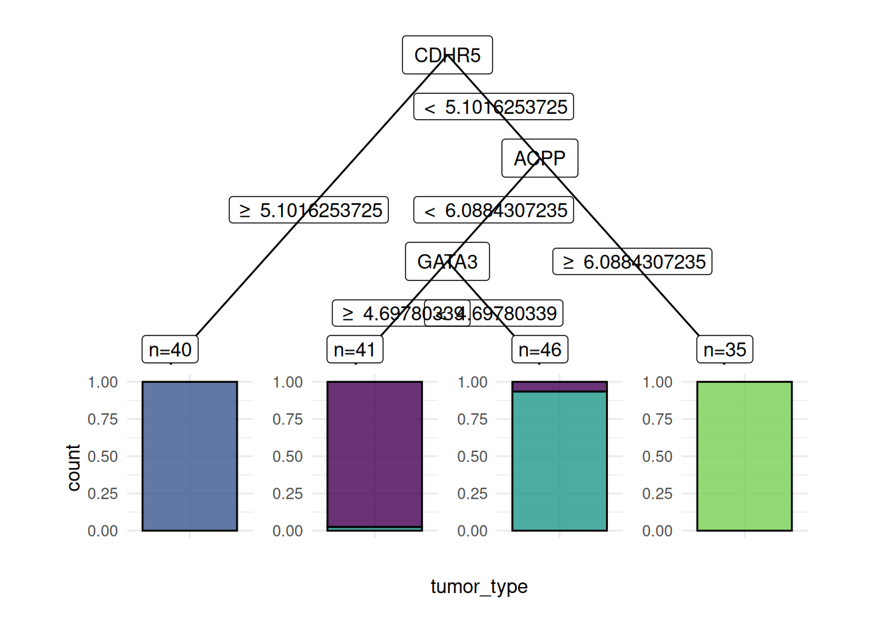
22.4.6.2.2 Predict
Now that we have trained the model on the training data, we can use it to predict the classes of the training data and the test data. The $predict method takes a task and produces a prediction based on the trained model, in this case, called learner.
pred_train = learner$predict(task, row_ids=train_set)Remember that we split the data into training and test sets. We can use the trained model to predict the classes of the test data. Since the test data was not used to train the model, it is not “cheating” like what we just did where we did the prediction on the training data.
pred_test = learner$predict(task, row_ids=test_set)22.4.6.2.3 Assess
For classification tasks, we often look at a confusion matrix of the truth vs the predicted classes for the samples.
Important
Assessing the performance of a model should always be reported from assessment on an independent test set.
pred_train$confusion truth
response BC CRC NSCLC PCA
BC 40 0 1 0
CRC 0 40 0 0
NSCLC 3 0 43 0
PCA 0 0 0 35- What does this confusion matrix tell you?
We can also ask for several “measures” of the performance of the model. Here, we ask for the accuracy of the model. To get a complete list of measures, use msr().
measures = msrs(c('classif.acc'))
pred_train$score(measures)classif.acc
0.9753086 - How does the accuracy compare to the confusion matrix?
- How does this accuracy compare to the accuracy of the k-nearest-neighbor model?
- How about the decision tree model?
pred_test$confusion truth
response BC CRC NSCLC PCA
BC 20 0 1 0
CRC 0 17 3 0
NSCLC 2 0 12 0
PCA 0 0 0 25pred_test$score(measures)classif.acc
0.925 - What does the confusion matrix in the test set tell you?
- How do the assessments of the test and training sets differ?
TipOverfitting
When the assessment of the test set is worse than the evaluation of the training set, the model may be overfit. How to address overfitting varies by model type, but it is a sign that you should pay attention to model selection and parameters.
22.4.6.3 RandomForest
learner = lrn("classif.ranger", importance = "impurity")22.4.6.3.1 Train
learner$train(task, row_ids = train_set)Again, you can look at the model that was trained.
learner$modelRanger result
Call:
ranger::ranger(dependent.variable.name = task$target_names, data = task$data(), probability = self$predict_type == "prob", importance = "impurity", num.threads = 1L)
Type: Classification
Number of trees: 500
Sample size: 162
Number of independent variables: 192
Mtry: 13
Target node size: 1
Variable importance mode: impurity
Splitrule: gini
OOB prediction error: 0.62 % For more details, the mlr3 random forest approach is based ont he ranger package. You can look at the ranger documentation.
- What is the OOB error in the output?
Random forests are a collection of decision trees. Since predictors enter the trees in a random order, the trees are different from each other. The random forest procedure gives us a measure of the “importance” of each variable.
head(learner$importance(), 15) CDHR5 TRPS1.1 FABP1 EPS8L3 KRT20 EFHD1 LGALS4 TRPS1
4.791870 3.918063 3.692649 3.651422 3.340382 3.314491 2.952969 2.926175
SFTPB SFTPB.1 GATA3 GATA3.1 TMPRSS2 MUC12 POF1B
2.805811 2.681004 2.344603 2.271845 2.248734 2.207347 1.806906 More “important” variables are those that are more often used in the trees. Are the most important variables the same as the ones that were important in the decision tree?
If you are interested, look up a few of the important variables in the model to see if they make biological sense.
22.4.6.3.2 Predict
Again, we can use the trained model to predict the classes of the training data and the test data.
pred_train = learner$predict(task, row_ids=train_set)pred_test = learner$predict(task, row_ids=test_set)22.4.6.3.3 Assess
pred_train$confusion truth
response BC CRC NSCLC PCA
BC 43 0 0 0
CRC 0 40 0 0
NSCLC 0 0 44 0
PCA 0 0 0 35measures = msrs(c('classif.acc'))
pred_train$score(measures)classif.acc
1 pred_test$confusion truth
response BC CRC NSCLC PCA
BC 22 0 0 0
CRC 0 17 0 0
NSCLC 0 0 16 0
PCA 0 0 0 25pred_test$score(measures)classif.acc
1 22.5 Example Predicting age from DNA methylation
We will be building a regression model for chronological age prediction, based on DNA methylation. This is based on the work of Jana Naue et al. 2017, in which biomarkers are examined to predict the chronological age of humans by analyzing the DNA methylation patterns. Different machine learning algorithms are used in this study to make an age prediction.
It has been recognized that within each individual, the level of DNA methylation changes with age. This knowledge is used to select useful biomarkers from DNA methylation datasets. The CpG sites with the highest correlation to age are selected as the biomarkers (and therefore features for building a regression model). In this tutorial, specific biomarkers are analyzed by machine learning algorithms to create an age prediction model.
The data are taken from this tutorial.
library(data.table)
meth_age = rbind(
fread('https://zenodo.org/record/2545213/files/test_rows_labels.csv'),
fread('https://zenodo.org/record/2545213/files/train_rows.csv')
)Let’s take a quick look at the data.
head(meth_age) RPA2_3 ZYG11A_4 F5_2 HOXC4_1 NKIRAS2_2 MEIS1_1 SAMD10_2 GRM2_9 TRIM59_5
<num> <num> <num> <num> <num> <num> <num> <num> <num>
1: 65.96 18.08 41.57 55.46 30.69 63.42 40.86 68.88 44.32
2: 66.83 20.27 40.55 49.67 29.53 30.47 37.73 53.30 50.09
3: 50.30 11.74 40.17 33.85 23.39 58.83 38.84 35.08 35.90
4: 65.54 15.56 33.56 36.79 20.23 56.39 41.75 50.37 41.46
5: 59.01 14.38 41.95 30.30 24.99 54.40 37.38 30.35 31.28
6: 81.30 14.68 35.91 50.20 26.57 32.37 32.30 55.19 42.21
LDB2_3 ELOVL2_6 DDO_1 KLF14_2 Age
<num> <num> <num> <num> <int>
1: 56.17 62.29 40.99 2.30 40
2: 58.40 61.10 49.73 1.07 44
3: 58.81 50.38 63.03 0.95 28
4: 58.05 50.58 62.13 1.99 37
5: 65.80 48.74 41.88 0.90 24
6: 70.15 61.36 33.62 1.87 43As before, we create the task object, but this time we use as_task_regr() to create a regression task.
- Why is this a regression task?
task = as_task_regr(meth_age,target = 'Age')set.seed(7)
train_set = sample(task$row_ids, 0.67 * task$nrow)
test_set = setdiff(task$row_ids, train_set)22.5.1 Example learners
22.5.1.1 Linear regression
We will start with a simple linear regression model.
learner = lrn("regr.lm")22.5.1.1.1 Train
learner$train(task, row_ids = train_set)When you train a linear regression model, we can evaluate some of the diagnostic plots to see if the model is appropriate (Figure 22.4).
par(mfrow=c(2,2))
plot(learner$model)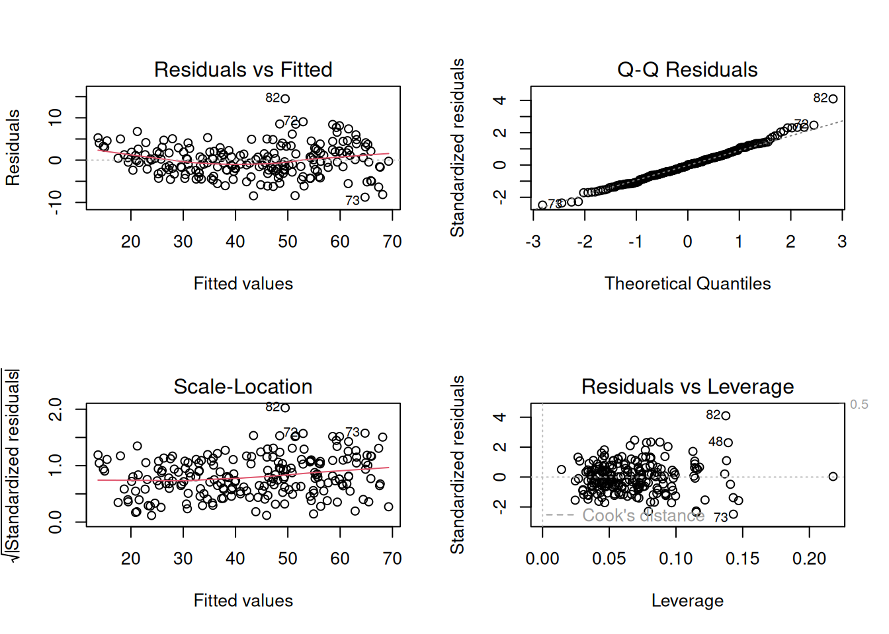
22.5.1.1.2 Predict
pred_train = learner$predict(task, row_ids=train_set)pred_test = learner$predict(task, row_ids=test_set)22.5.1.1.3 Assess
pred_train<PredictionRegr> for 209 observations:
row_ids truth response
298 29 31.40565
103 58 56.26019
194 53 48.96480
--- --- ---
312 48 52.61195
246 66 67.66312
238 38 39.38414We can plot the relationship between the truth and response, or predicted value to see visually how our model performs.
library(ggplot2)
ggplot(pred_train,aes(x=truth, y=response)) +
geom_point() +
geom_smooth(method='lm')`geom_smooth()` using formula = 'y ~ x'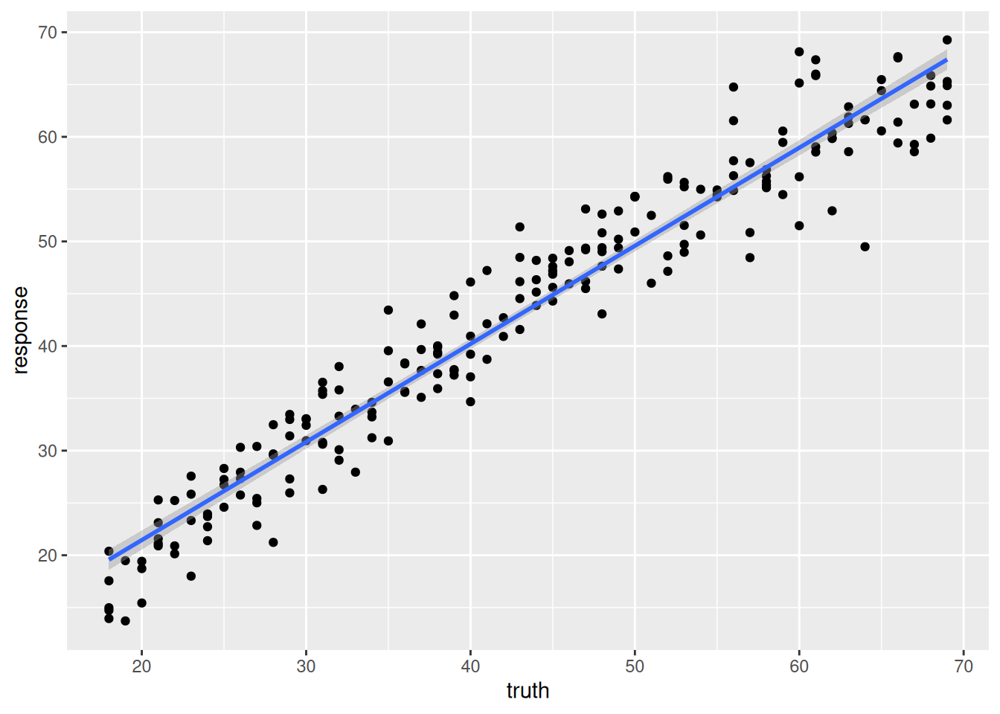
We can use the r-squared of the fit to roughly compare two models.
measures = msrs(c('regr.rsq'))
pred_train$score(measures) rsq
0.9376672 pred_test<PredictionRegr> for 103 observations:
row_ids truth response
4 37 37.64301
5 24 28.34777
7 34 33.22419
--- --- ---
306 42 41.65864
307 63 58.68486
309 68 70.41987pred_test$score(measures) rsq
0.9363526 22.5.1.2 Regression tree
learner = lrn("regr.rpart", keep_model = TRUE)22.5.1.2.1 Train
learner$train(task, row_ids = train_set)learner$modeln= 209
node), split, n, deviance, yval
* denotes terminal node
1) root 209 45441.4500 43.27273
2) ELOVL2_6< 56.675 98 5512.1220 30.24490
4) ELOVL2_6< 47.24 47 866.4255 24.23404
8) GRM2_9< 31.3 34 289.0588 22.29412 *
9) GRM2_9>=31.3 13 114.7692 29.30769 *
5) ELOVL2_6>=47.24 51 1382.6270 35.78431
10) F5_2>=39.295 35 473.1429 33.28571 *
11) F5_2< 39.295 16 213.0000 41.25000 *
3) ELOVL2_6>=56.675 111 8611.3690 54.77477
6) ELOVL2_6< 65.365 63 3101.2700 49.41270
12) KLF14_2< 3.415 37 1059.0270 46.16216 *
13) KLF14_2>=3.415 26 1094.9620 54.03846 *
7) ELOVL2_6>=65.365 48 1321.3120 61.81250 *What is odd about using a regression tree here is that we end up with only a few discrete estimates of age. Each “leaf” has a value.
22.5.1.2.2 Predict
pred_train = learner$predict(task, row_ids=train_set)pred_test = learner$predict(task, row_ids=test_set)22.5.1.2.3 Assess
pred_train<PredictionRegr> for 209 observations:
row_ids truth response
298 29 33.28571
103 58 61.81250
194 53 46.16216
--- --- ---
312 48 54.03846
246 66 61.81250
238 38 41.25000We can see the effect of the discrete values much more clearly here.
library(ggplot2)
ggplot(pred_train,aes(x=truth, y=response)) +
geom_point() +
geom_smooth(method='lm')`geom_smooth()` using formula = 'y ~ x'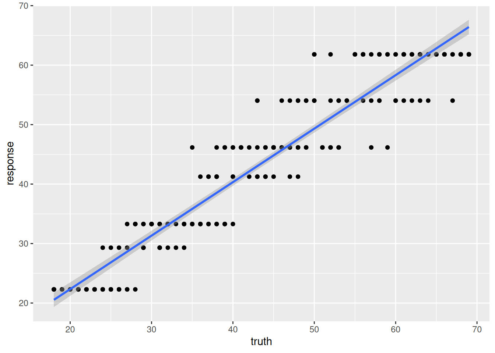
And the r-squared values for this model prediction shows quite a bit of difference from the linear regression above.
measures = msrs(c('regr.rsq'))
pred_train$score(measures) rsq
0.8995351 pred_test<PredictionRegr> for 103 observations:
row_ids truth response
4 37 41.25000
5 24 33.28571
7 34 33.28571
--- --- ---
306 42 46.16216
307 63 61.81250
309 68 61.81250pred_test$score(measures) rsq
0.8545402 22.5.1.3 RandomForest
Randomforest is also tree-based, but unlike the single regression tree above, randomforest is a “forest” of trees which will eliminate the discrete nature of a single tree.
learner = lrn("regr.ranger", mtry=2, min.node.size=20)22.5.1.3.1 Train
learner$train(task, row_ids = train_set)learner$modelRanger result
Call:
ranger::ranger(dependent.variable.name = task$target_names, data = task$data(), min.node.size = 20L, mtry = 2L, num.threads = 1L)
Type: Regression
Number of trees: 500
Sample size: 209
Number of independent variables: 13
Mtry: 2
Target node size: 20
Variable importance mode: none
Splitrule: variance
OOB prediction error (MSE): 18.85364
R squared (OOB): 0.9137009 22.5.1.3.2 Predict
pred_train = learner$predict(task, row_ids=train_set)pred_test = learner$predict(task, row_ids=test_set)22.5.1.3.3 Assess
pred_train<PredictionRegr> for 209 observations:
row_ids truth response
298 29 30.62154
103 58 58.05445
194 53 48.25661
--- --- ---
312 48 51.49846
246 66 64.39315
238 38 38.18038ggplot(pred_train,aes(x=truth, y=response)) +
geom_point() +
geom_smooth(method='lm')`geom_smooth()` using formula = 'y ~ x'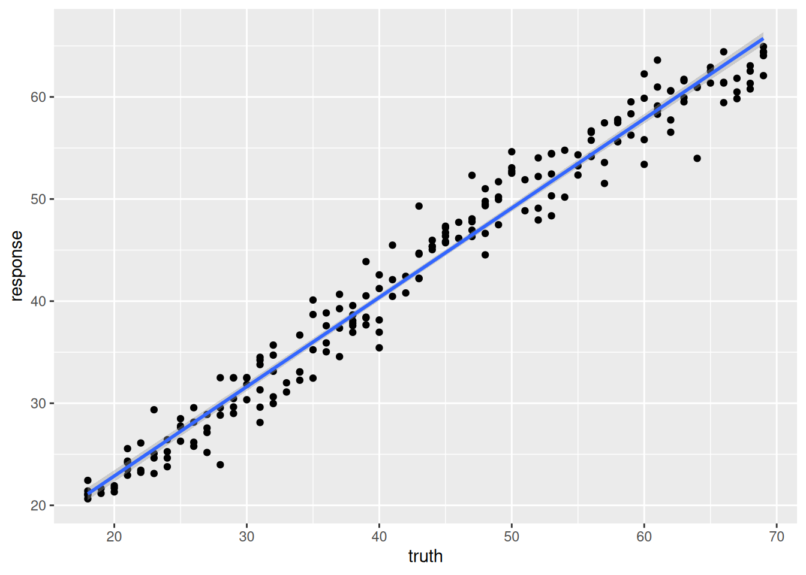
measures = msrs(c('regr.rsq'))
pred_train$score(measures) rsq
0.960961 pred_test<PredictionRegr> for 103 observations:
row_ids truth response
4 37 37.79631
5 24 29.18371
7 34 33.26780
--- --- ---
306 42 40.29101
307 63 58.26534
309 68 63.15481pred_test$score(measures) rsq
0.9208394 22.6 Example: Expression prediction from histone modification data
In this little set of exercises, you will be using histone marks near a gene to predict its expression (Figure 22.5).
\[ y ~ h1 + h2 + h3 + ... \tag{22.1}\]

The data are from a study that aimed to predict gene expression from histone modification data. The data include gene expression levels and histone modification data for a set of genes. The goal is to build a machine learning model that can predict gene expression levels based on the histone modification data. The histone modification data are simply summaries of the histone marks within the promoter, defined as the region 2kb upstream of the transcription start site for this exercise.
We will try a couple of different approaches:
- Penalized regression
- RandomForest
22.6.1 The Data
The data in this exercise were developed by Anshul Kundaje. We are not going to focus on the details of the data collection, etc. Instead, this is
fullFeatureSet <- read.table("http://seandavi.github.io/ITR/expression-prediction/features.txt");What are the column names of the predictor variables?
colnames(fullFeatureSet) [1] "Control" "Dnase" "H2az" "H3k27ac" "H3k27me3" "H3k36me3"
[7] "H3k4me1" "H3k4me2" "H3k4me3" "H3k79me2" "H3k9ac" "H3k9me1"
[13] "H3k9me3" "H4k20me1"These are going to be predictors combined into a model. Some of our learners will rely on predictors being on a similar scale. Are our data already there?
To perform centering and scaling by column, we can convert to a matrix and then use scale.
par(mfrow=c(1,2))
scaled_features <- scale(as.matrix(fullFeatureSet))
boxplot(fullFeatureSet, title='Original data')
boxplot(scaled_features, title='Centered and scaled data')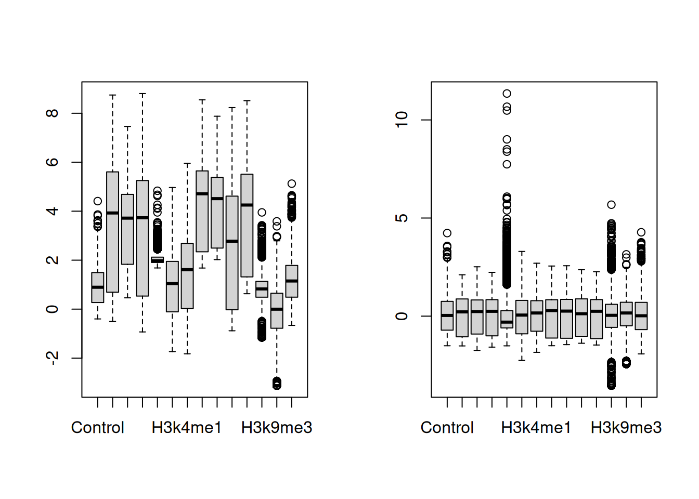
There is a row for each gene and a column for each histone mark and we can see that the data are centered and scaled by column. We can also see some patterns in the data (see Figure 22.7).
sampled_features <- fullFeatureSet[sample(nrow(scaled_features), 500),]
library(ComplexHeatmap)========================================
ComplexHeatmap version 2.22.0
Bioconductor page: http://bioconductor.org/packages/ComplexHeatmap/
Github page: https://github.com/jokergoo/ComplexHeatmap
Documentation: http://jokergoo.github.io/ComplexHeatmap-reference
If you use it in published research, please cite either one:
- Gu, Z. Complex Heatmap Visualization. iMeta 2022.
- Gu, Z. Complex heatmaps reveal patterns and correlations in multidimensional
genomic data. Bioinformatics 2016.
The new InteractiveComplexHeatmap package can directly export static
complex heatmaps into an interactive Shiny app with zero effort. Have a try!
This message can be suppressed by:
suppressPackageStartupMessages(library(ComplexHeatmap))
========================================Heatmap(sampled_features, name='histone marks', show_row_names=FALSE)Warning: The input is a data frame-like object, convert it to a matrix.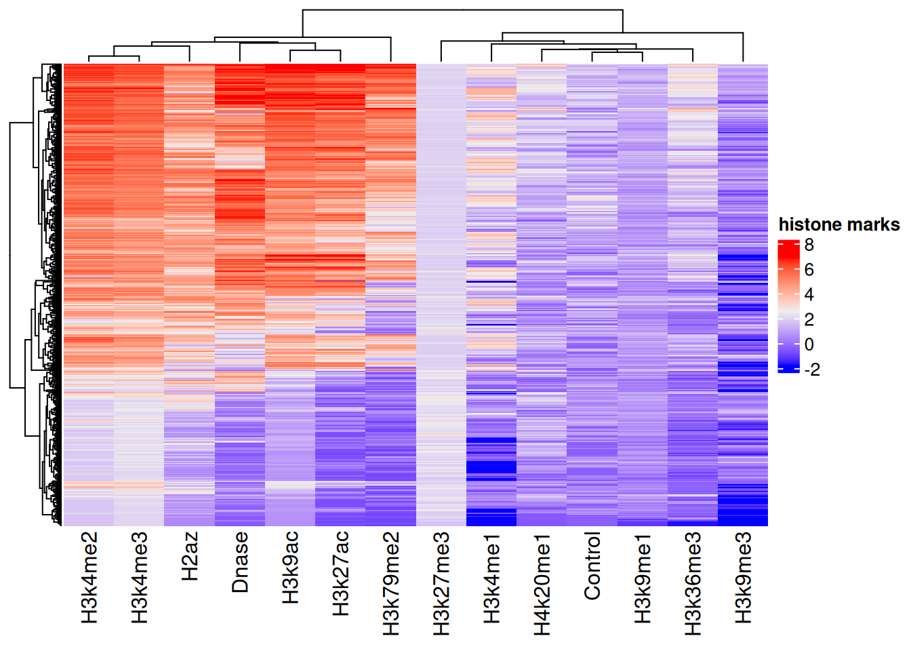
Now, we can read in the associated gene expression measures that will become our “target” for prediction.
target <- scan(url("http://seandavi.github.io/ITR/expression-prediction/target.txt"), skip=1)
# make into a dataframe
exp_pred_data <- data.frame(gene_expression=target, scaled_features)And the first few rows of the target data frame using:
head(exp_pred_data,3) gene_expression Control Dnase H2az
ENSG00000000419.7.49575069 6.082343 0.7452926 0.7575546 1.0728432
ENSG00000000457.8.169863093 2.989145 1.9509786 1.0216546 0.3702787
ENSG00000000938.7.27961645 -5.058894 -0.3505542 -1.4482958 -1.0390775
H3k27ac H3k27me3 H3k36me3 H3k4me1
ENSG00000000419.7.49575069 1.0950440 -0.5125312 1.1334793 0.4127984
ENSG00000000457.8.169863093 0.7142157 -0.4079244 0.8739005 1.1649282
ENSG00000000938.7.27961645 -1.0173283 1.4117293 -0.5157582 -0.5017450
H3k4me2 H3k4me3 H3k79me2 H3k9ac
ENSG00000000419.7.49575069 1.2136176 1.1202901 1.5155803 1.2468256
ENSG00000000457.8.169863093 0.6456572 0.6508561 0.7976487 0.5792891
ENSG00000000938.7.27961645 -0.1878255 -0.6560973 -1.3803974 -1.0067972
H3k9me1 H3k9me3 H4k20me1
ENSG00000000419.7.49575069 0.1426980 1.185622 1.9599992
ENSG00000000457.8.169863093 0.3630902 1.014923 -0.2695111
ENSG00000000938.7.27961645 0.6564520 -1.370871 -1.877317822.6.2 Create task
exp_pred_task = as_task_regr(exp_pred_data, target='gene_expression')Partition the data into test and training sets. We will use \(\frac{1}{3}\) and \(\frac{2}{3}\) of the data for testing.
split = partition(exp_pred_task)22.6.3 Example learners
22.6.3.1 Linear regression
learner = lrn("regr.lm")22.6.3.1.1 Train
learner$train(exp_pred_task, split$train)22.6.3.1.2 Predict
pred_train = learner$predict(exp_pred_task, split$train)
pred_test = learner$predict(exp_pred_task, split$test)22.6.3.1.3 Assess
pred_train<PredictionRegr> for 5789 observations:
row_ids truth response
1 6.082343 5.182373
2 2.989145 2.970278
3 -5.058894 -5.283509
--- --- ---
8637 -5.058894 -3.955237
8638 6.089159 4.809801
8640 -3.114148 -4.723061plot(pred_train)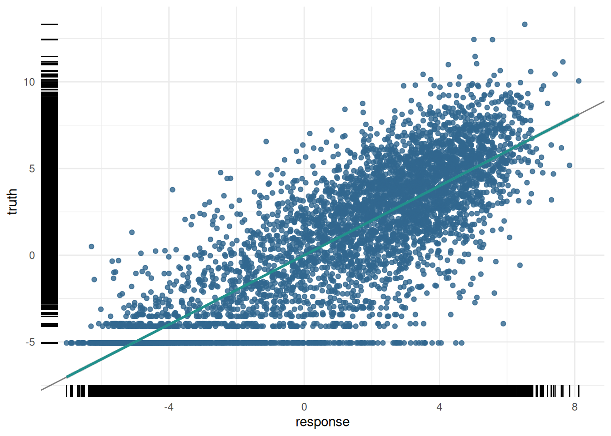
For the training data:
measures = msrs(c('regr.rsq'))
pred_train$score(measures) rsq
0.7505366 And the test data:
pred_test$score(measures) rsq
0.7510334 And the plot of the test data predictions:
plot(pred_test)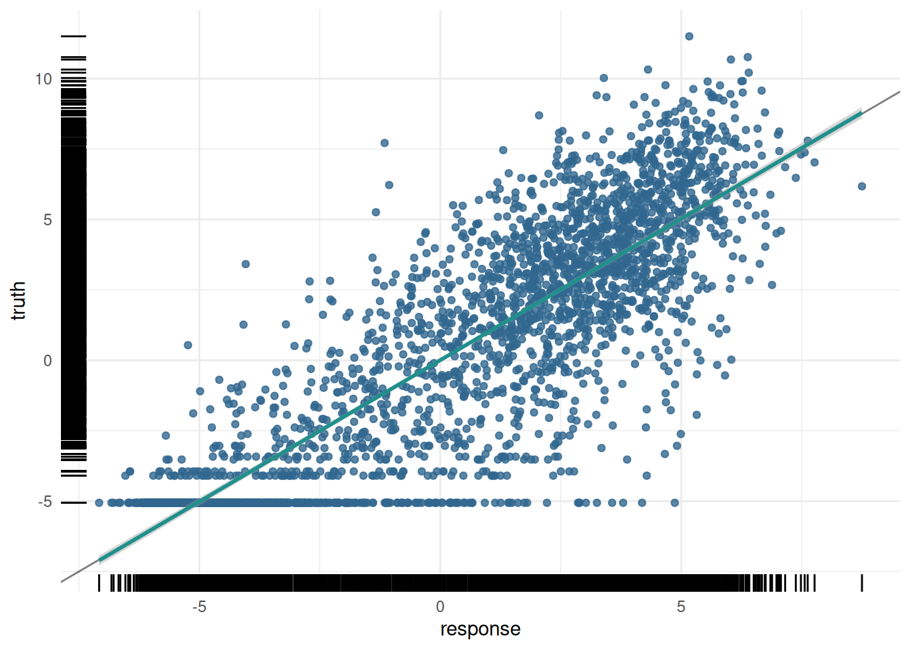
22.6.3.2 Penalized regression
Imagine you want to teach a computer to predict house prices based on various features like size, number of bedrooms, and location. You decide to use regression, which finds a relationship between these features and the house prices. But what if your model becomes too complicated? This is where penalized regression comes in.
22.6.3.2.1 The Problem with Overfitting
Sometimes, the model tries too hard to fit every single data point perfectly. This can make the model very complex, like trying to draw a perfect line through a very bumpy path. This problem is called overfitting. An overfitted model works well on the data it has seen (training data) but performs poorly on new, unseen data (testing data).
22.6.3.2.2 Introducing Penalized Regression
Penalized regression helps prevent overfitting by adding a “penalty” to the model for being too complex. Think of it as a way to encourage the model to be simpler and more general. There are three common types of penalized regression:
- Ridge Regression (L2 Penalty):
- Adds a penalty based on the size of the coefficients. It tries to keep all coefficients small.
- If the model’s equation looks too complicated, Ridge Regression will push it towards a simpler form by shrinking the coefficients.
- Imagine you have a rubber band that pulls the coefficients towards zero, making the model less likely to overfit.
- Lasso Regression (L1 Penalty):
- Adds a penalty that can shrink some coefficients all the way to zero.
- This means Lasso Regression can completely remove some features from the model, making it simpler.
- Imagine you have a pair of scissors that can cut off the least important features, leaving only the most important ones.
- Elastic Net:
- Combines both Ridge and Lasso penalties. It adds penalties for both the size and the number of coefficients.
- This method balances between shrinking coefficients and eliminating some altogether, offering the benefits of both Ridge and Lasso.
- Think of Elastic Net as using both the rubber band (Ridge) and scissors (Lasso) to simplify the model.
With our data, the number of predictors is not huge, but we might be interested in 1) reducing overfitting, 2) improving interpretability, or 3) both by minimizing the number of predictors in our model without drastically affecting our prediction accuracy. Without penalized regression, the model might come up with a very complex equation. With Ridge, Lasso, or Elastic Net, the model simplifies this equation by either shrinking the coefficients (Ridge), removing some of them (Lasso), or balancing both (Elastic Net).
Here’s a simple summary:
- Ridge Regression: Reduces the impact of less important features by shrinking their coefficients.
- Lasso Regression: Can eliminate some features entirely by setting their coefficients to zero.
- Elastic Net: Combines the effects of Ridge and Lasso, shrinking some coefficients and eliminating others.
Using penalized regression in machine learning ensures that your model:
- Performs Better on New Data: By avoiding overfitting, the model can make more accurate predictions on new, unseen data.
- Is Easier to Interpret: A simpler model with fewer features is easier to understand and explain.
22.6.3.3 Penalized Regression with mlr3
In the mlr3 package, you can easily apply penalized regression methods to your tasks. Here’s how:
- Select Penalized Regression Learners: mlr3 provides learners for Ridge, Lasso, and Elastic Net Regression.
- Train the Learner: Use your data to train the chosen penalized regression model.
- Evaluate and Adjust: Check how well the model performs and make adjustments if needed.
This description explains penalized regression, including Ridge, Lasso, and Elastic Net, in an intuitive way, highlighting their benefits and how they work, while relating them to familiar concepts and the mlr3 package.
Recall that we can use penalized regression to select the most important predictors from a large set of predictors. In this case, we will use the glmnet package to perform penalized regression, but we will use the mlr interface to glmnet to make it easier to use.
The nfolds parameter is the number of folds to use in the cross-validation procedure.
What is Cross-Validation? Cross-validation is a technique used to assess how well a model will perform on unseen data. It involves splitting the data into multiple parts, training the model on some of these parts, and validating it on the remaining parts. This process is repeated several times to ensure the model’s performance is consistent.
Why Use Cross-Validation? Cross-validation helps to:
- Avoid Overfitting: By testing the model on different subsets of the data, cross-validation helps ensure that the model does not memorize the training data but learns to generalize from it.
- Select the Best Model Parameters: Penalized regression models, such as those trained with glmnet, have parameters that control the strength of the penalty (e.g., lambda). Cross-validation helps find the best values for these parameters.
When using the glmnet package, cross-validation can be performed using the cv.glmnet function. Here’s how the process works:
Split the Data: The data is divided into 𝑘 k folds (common choices are 5 or 10 folds). Each fold is a subset of the data.
Train and Validate: The model is trained 𝑘 k times. In each iteration, 𝑘 − 1 k−1 folds are used for training, and the remaining fold is used for validation. This process is repeated until each fold has been used as the validation set exactly once.
Calculate Performance: The performance of the model (e.g., mean squared error for regression) is calculated for each fold. The average performance across all folds is computed to get an overall measure of how well the model is expected to perform on unseen data.
Select the Best Parameters: The cv.glmnet function evaluates different values of the penalty parameter (lambda). It selects the lambda value that results in the best average performance across the folds.
In this case, we will use the cv_glmnet learner, which will automatically select the best value of the penalization parameters. When the alpha parameter is set to 0, the model is a Ridge regression model. When the alpha parameter is set to 1, the model is a Lasso regression model.
learner = lrn("regr.cv_glmnet", nfolds=10, alpha=0)22.6.3.3.1 Train
learner$train(exp_pred_task)measures = msrs(c('regr.rsq', 'regr.mse', 'regr.rmse'))
pred_train$score(measures) rsq regr.mse regr.rmse
0.7505366 4.8335493 2.1985334 In the case of the penalized regression, we can also look at the coefficients of the model.
coef(learner$model)15 x 1 sparse Matrix of class "dgCMatrix"
s0
(Intercept) 0.10173828
Control -0.07049573
Dnase 0.87495827
H2az 0.33778155
H3k27ac 0.19454755
H3k27me3 -0.26196627
H3k36me3 0.70067015
H3k4me1 -0.06753216
H3k4me2 0.15796965
H3k4me3 0.38806405
H3k79me2 0.94399114
H3k9ac 0.50694074
H3k9me1 -0.07422291
H3k9me3 -0.17013775
H4k20me1 0.11617186Note that the coefficients are all zero for the histone marks that were not selected by the model. In this case, we can use the model not to predict new data, but to help us understand the data.
pred_train = learner$predict(exp_pred_task, split$train)
pred_test = learner$predict(exp_pred_task, split$test)22.6.3.3.2 Assess
pred_train<PredictionRegr> for 5789 observations:
row_ids truth response
1 6.082343 4.892642
2 2.989145 2.932909
3 -5.058894 -4.518292
--- --- ---
8637 -5.058894 -4.341742
8638 6.089159 4.696146
8640 -3.114148 -4.153795plot(pred_train)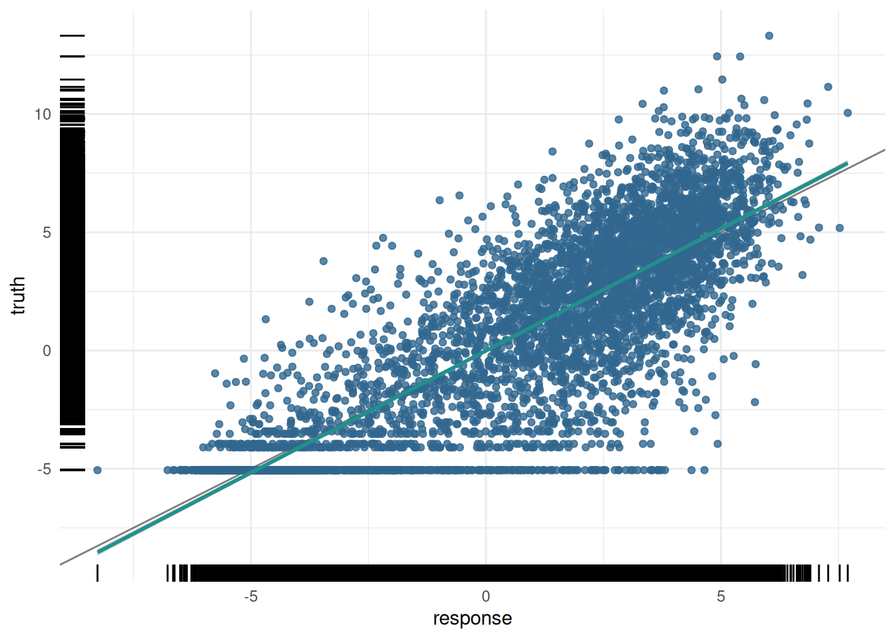
For the training data:
measures = msrs(c('regr.rsq'))
pred_train$score(measures) rsq
0.742853 And the test data:
pred_test$score(measures) rsq
0.7428019 And the plot of the test data predictions:
plot(pred_test)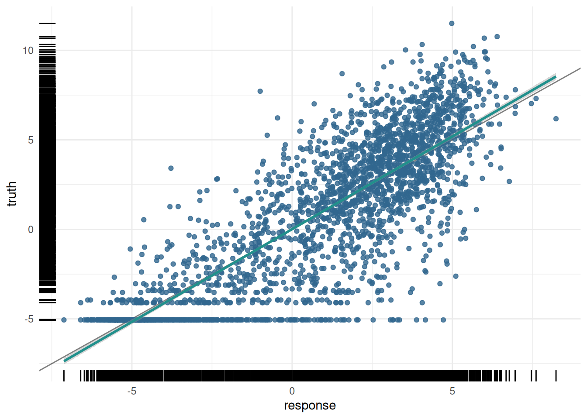
# Calculate the R-squared value
truth <- pred_test$truth
predicted <- pred_test$response
rss <- sum((truth - predicted)^2) # Residual sum of squares
tss <- sum((truth - mean(truth))^2) # Total sum of squares
r_squared <- 1 - (rss / tss)